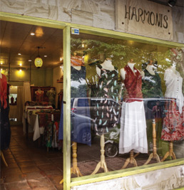
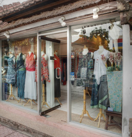
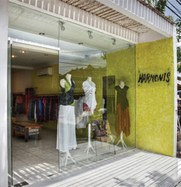

Ubud
Jalan Monkey Forest. Just across the football field, about 800 mEters before Ubud Palace.
(0361)972691

Ubud
Jalan Monkey Forest 300 meters away from our other ubud location approximately 500 meters before Ubud Palace.
(0361)971237

Seminak
Jalan Raya Basangkasa, Seminyak 30 meters away from Cafe Moka on the same side of the street.
(0361)7474788